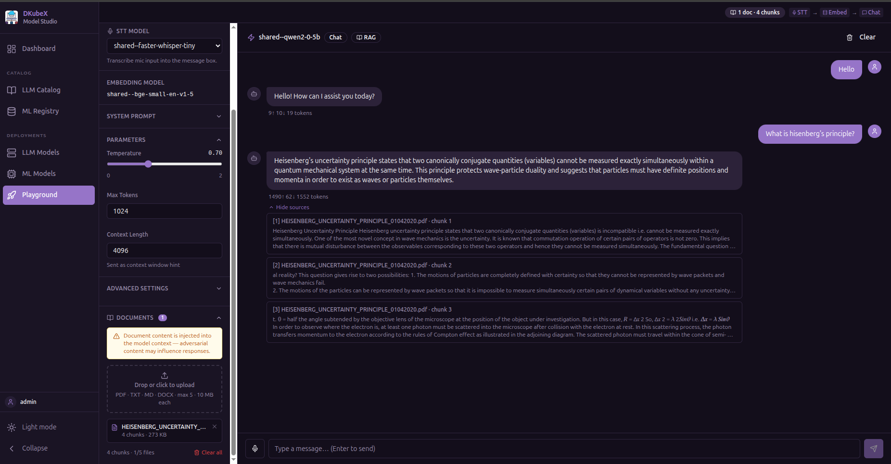
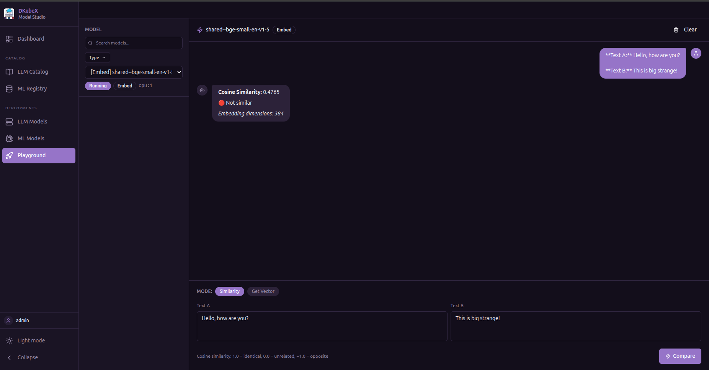

Playground Guide¶
The Playground is a unified inference workbench where you can test your deployed LLM models and registered NVIDIA NIM models.
Select a model from the dropdown at the top, then choose a tab for the capability you want to test.
Supported model types:
Tab |
KubeAI LLM |
NVIDIA NIM |
|---|---|---|
Chat (Text Generation) |
Yes |
Yes (LLM models) |
RAG (Document-Grounded Chat) |
Yes |
Yes (NIM LLM models) |
Embeddings |
Yes |
Yes (NIM Embedding models) |
Reranking |
Yes |
Yes (NIM Reranking models) |
Text to Speech |
Yes |
— |
Vision (Image + Text) |
Coming in a future KubeAI release |
Yes (NIM Vision-Language models) |
Image Generation |
Coming in a future KubeAI release |
— |
Speech to Text |
Coming in a future KubeAI release |
— |
Self-hosted NIM models that are still deploying: A status banner appears above the input when a selected self-hosted NIM model is not yet Running. The input and Send button are disabled until the model becomes ready. The status updates automatically every 15 seconds.
Chat (Text Generation)¶
Stream responses from a text-generation model.

Type a message and press Enter or click Send
Responses stream in real time
Token usage (prompt / completion / total) is shown after each response
Use the Copy button to copy the last response to clipboard
Clear resets the conversation history
RAG (Document-Grounded Chat)¶
Upload documents and have the model answer questions using content from them.

Supported file types: PDF, DOCX, TXT
How it works:
Upload one or more documents using the file picker
The app extracts text, splits it into chunks, and embeds each chunk using a deployed embedding model
When you send a message, the most relevant chunks are retrieved and injected into the model’s context as grounding
The response includes source attribution — which document passages were used
You need a deployed embedding model in addition to the text-generation model for RAG to work.
Embeddings¶
Generate a vector embedding for a piece of text.

Enter text in the input field and click Generate
The embedding vector (array of floats) is displayed
Useful for verifying that your embedding model is working correctly
Reranking¶
Rerank a list of passages by relevance to a query.
Enter a query
Enter one passage per line in the Documents field
Click Rerank
Passages are returned sorted by relevance score (highest first)
Text to Speech¶
Synthesize speech from text.
Enter text in the input field
Click Synthesize
An audio player appears — click play to listen or download the audio file
Coming in Future KubeAI Releases¶
The following tabs are present in the UI but require KubeAI model types that are not yet available. They will become functional once the corresponding KubeAI support ships.
Vision (Image + Text)¶
Send images alongside text to vision-capable models.
Click the Attach Image button to upload an image
Type a question or instruction about the image
The model receives both the image and text in the same message
Image Generation¶
Generate images from a text prompt.
Enter a text prompt describing the image
Click Generate
The generated image is displayed inline
Speech to Text¶
Transcribe audio to text.
Click Record to capture audio from your microphone, or upload an audio file
Click Transcribe
The transcription appears in the output panel
Tips¶
The model dropdown only shows models that match the selected tab’s required features
Token usage is tracked per request for all text-generation modes
The Chat tab retains message history for multi-turn conversations; all other tabs are single-turn